[ home | research
| personal | resume
| links ]
| 
| 
| 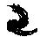
| 
| 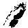
|
| 
| 
| 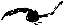
| 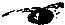
| 
|
Image sharpness from wavelength to wavelength
Here are three images of the pair of colliding galaxies known
as `The Antennae', the best studied galaxy crash in the Universe.
The images are taken at progressively longer wavelengths:
0.5 micrometers (visible light), 5.0 micrometers (infrared light)
and 850 micrometers ('sub-millimeter' light).
The sharpness of the images is diameter by two
quantities: the wavelength at which the image is taken
and the diameter of the telescope mirror (camera lens).
Increasing the wavelength decreases the sharpness.
An image taken at a wavelength of 5 micrometers is
10 times less sharp than an image taken -- through
the same lens -- at a wavelength of 0.5 micrometers.
The loss of diameter can be compensated by increasing
the diameter of the lens. In space, an image taken
through a lens with a diameter of 2.5 meters is 10
times sharper than an image taken -- at the same
wavelength -- through a lens with a diameter of
0.25 meters.
In the table below you can see that for the three
telescopes used to obtain the three images both the
wavelength and the diameter of the lens vary. The
combined effect on the image sharpness is shown in
the final column of the table.
| Telescope | Diameter | Wavelength | Sharpness |
| Hubble-ACS | 2.5 m | 0.5 microns | Hubble=1 |
| Spitzer-IRAC | 0.85 m | 5 microns | 1/30 |
| SCUBA | 15 m | 850 microns | 1/283 |
|
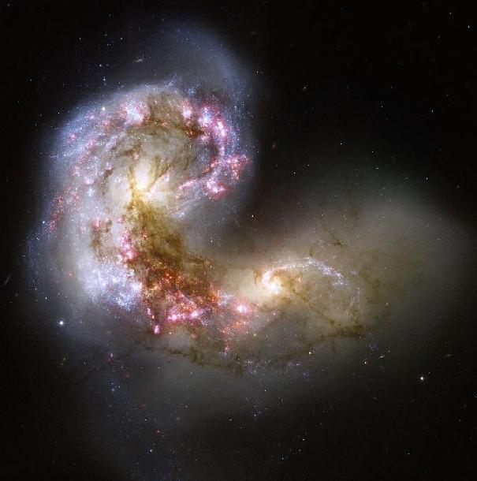
|
|
The Antennae as imaged using the ACS camera on the Hubble Space
Telescope shows by far the most details. The centers of the two
galaxies (the `nuclei') can be recognized by their yellowish
color, indicating an old, aging stellar population. Clusters
of young massive stars appear blueish. They dominate the one
remaining spiral arm of the upper galaxy. Even younger
massive stars are hiding in the regions showing up as red.
These stars are illuminating their birth clouds, causing them
to glow in a very specific shade of red: the finger print of
hydrogen atoms. The region showing up as brown in between the
two nuclei is where gas clouds from the two colliding galaxies
are piling up. This is where the next generation of stars is
forming! The region appears dark because large amounts of
dust hide the forming and
recently formed stars from view. In infrared light the
obscuration is far lower, and we can see the new stars
illuminating their birth clouds.
|
|
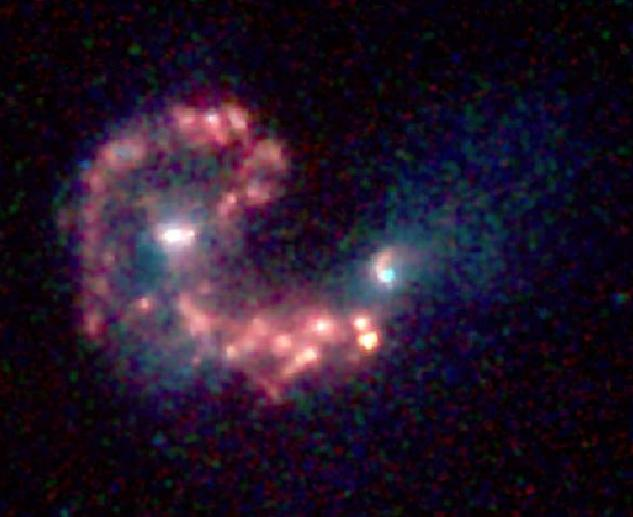
|
|
The Antennae as imaged using the IRAC infrared camera on the
Spitzer Space Telescope shows 30 times less detail than the
Hubble Space Telescope image. Not only
is the diameter of the telescope mirror of Spitzer 3 times
smaller than that of Hubble, also the wavelength of the infrared
light is 10 times longer than that of visible light. This
results in the 3x10=30 times lower sharpness. Despite the
lower sharpness the Spitzer-IRAC image contains valuable
information! The false color image shows in red the light
produced by PAH molecules
indicating where new stars are being formed. In blue/white,
the false color image shows where old stars reside: mainly
in the nuclei of the two galaxies. The latter appear
yellow in the true color image taken by the Hubble telescope.
|
|
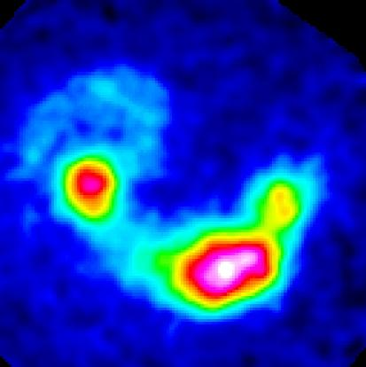
|
|
The Antennae as imaged using the SCUBA camera on the James
Maxwell Joint Telescope (JCMT) shows 283 times less detail
than the Hubble image. The wavelengths that SCUBA studies
are 1700 times longer than those of visible light, but
this is compensated by a 6 times larger diameter of the
JCMT telescope mirror. This results in a 1700/6=283 times
lower sharpness of the SCUBA image compared to Hubble the
image. Despite the lack of resolution, the SCUBA image
contains valuable information on where in the
colliding galaxies the coldest gas clouds are piled up.
These are the sites where eventually new stars will form!
The brightest of these regions corresponds to a region
of very strong obscuration (with a brown hue) in the Hubble
image.
In 2010, when the ALMA
telescope array will be completed, image quality at
millimeter wavelengths will improve drastically, offering
Hubble quality sharpness at these very long wavelengths.
To achieve this, the diameter of the ALMA array can be
beefed up to 18 kilometers (compared
to 2.5 meters for Hubble)!
|
Back to the Galaxy Crash Course page